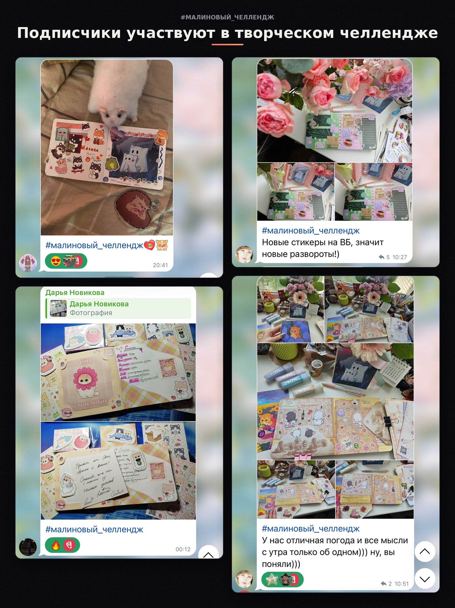
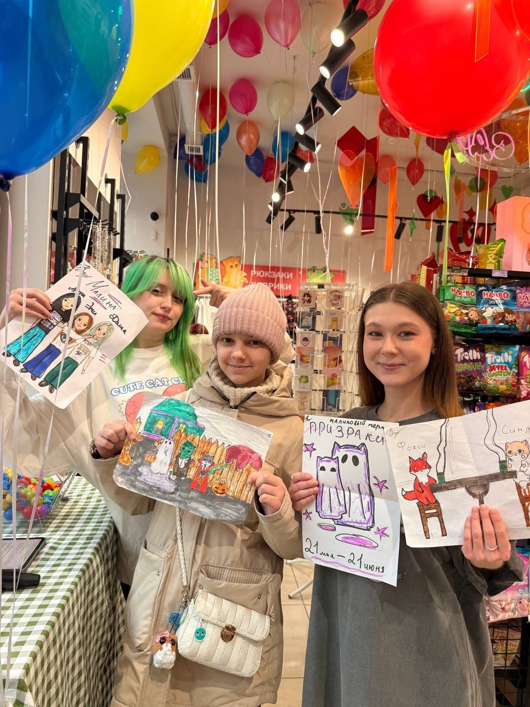
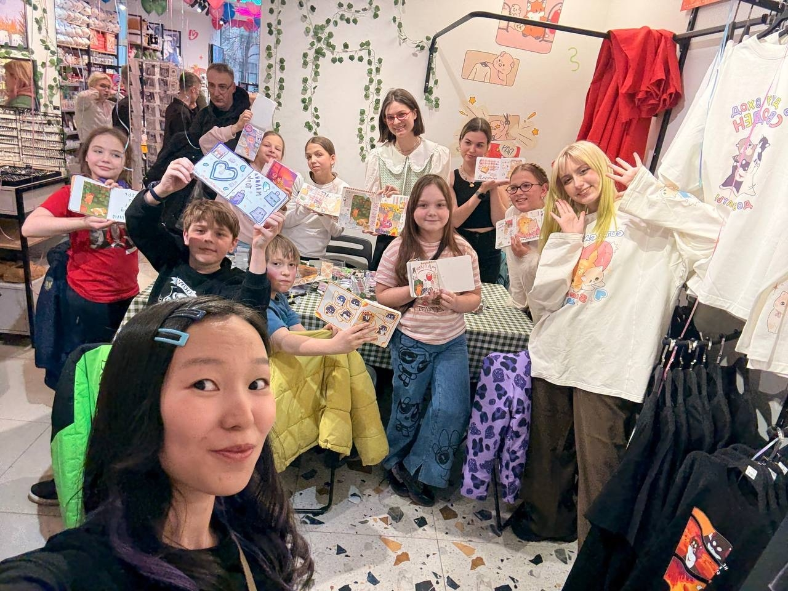

Задача была не просто наращивать подписчиков, а превратить аудиторию в сообщество, которому интересно взаимодействовать с брендом.
Перевела коммуникацию от безличного бренда к более личному формату и стала одним из лиц бренда. Создала систему регулярных механик:


